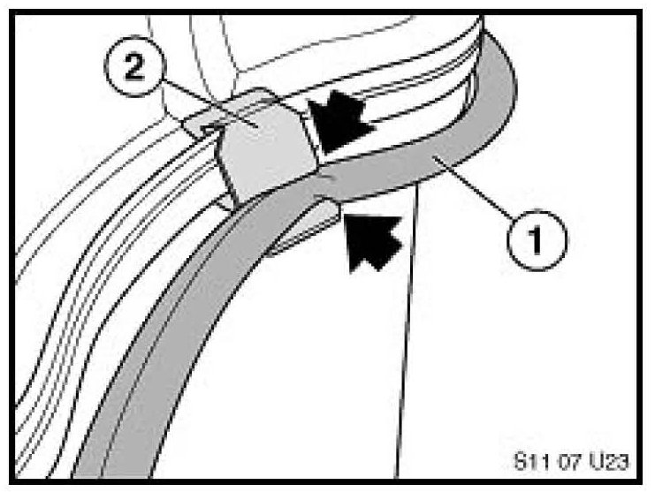
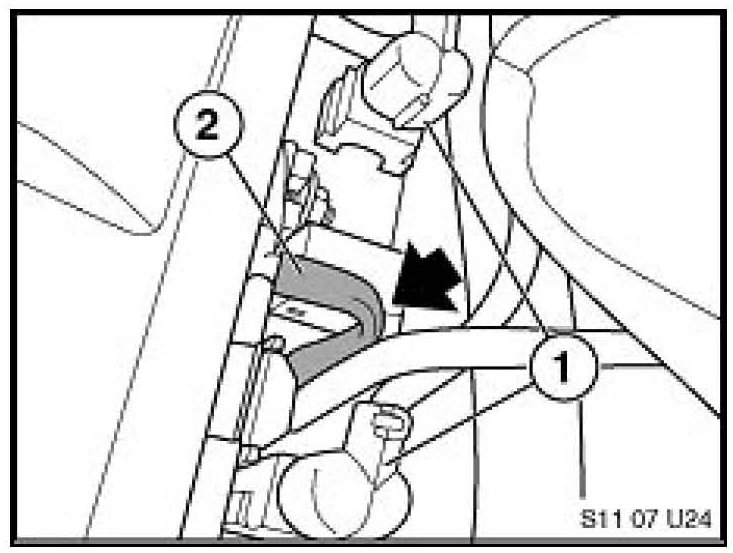
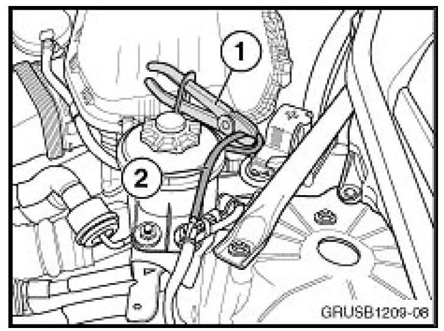
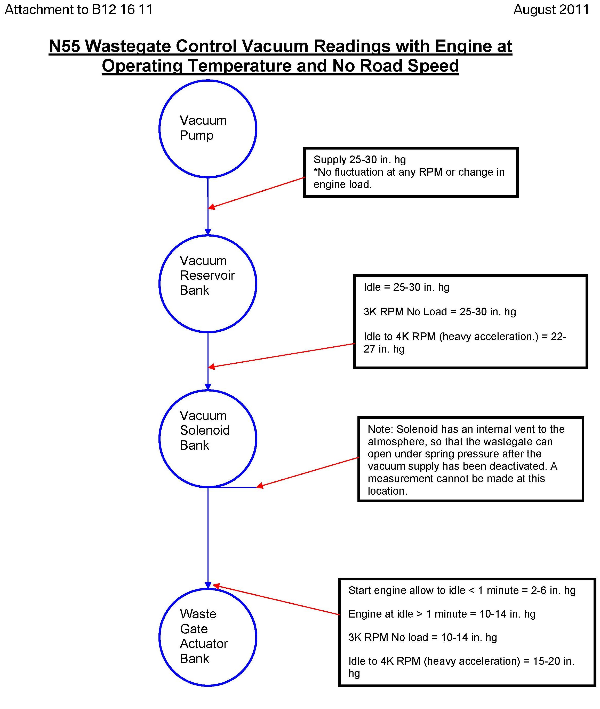
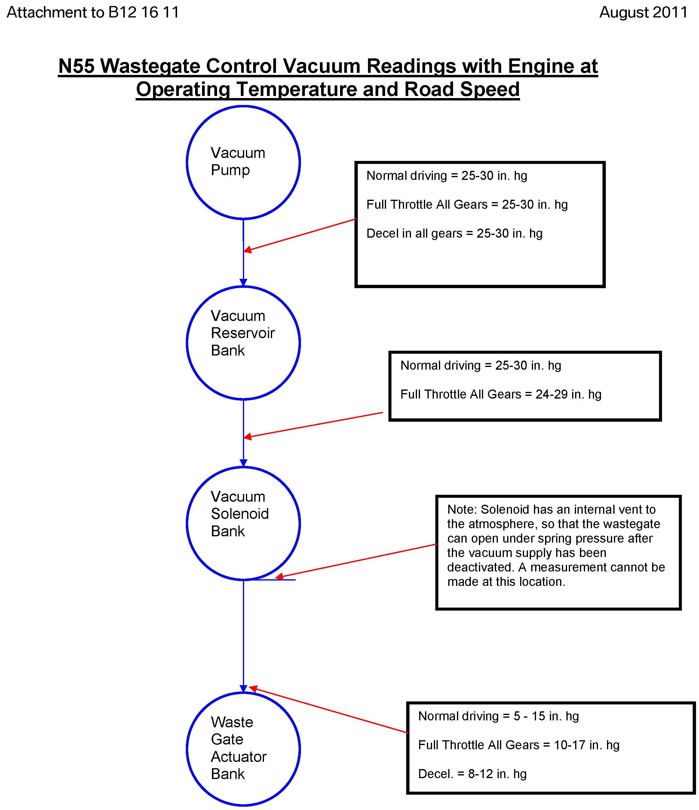

Engine Controls - MIL ON, Boost Pressure DTCs And Reduced Power
SI B12 1611Engine Electrical Systems
March 2013
Technical Service
This Service Information bulletin supersedes SI B12 16 11 dated August 2011.
[NEW] designates changes to this revision
SUBJECT
N55 Engine Failsafe - FC 120308 Boost Pressure Control, Plausibility: Pressure Too Low Stored in DME Fault Memory
MODEL
[NEW]
E70
E71
E82
E84
E88
E90
E92
E93
F01
F02
F07
F10
F12
F13
F25
F30
INFORMATION
[NEW] The customer complains the SES is illuminated and the engine has reduced power (engine failsafe mode). One of the following faults is stored in the DME memory:
^ [NEW] FC 2C57 boost pressure control, plausibility: pressure too low
^ [NEW] FC 120308 boost pressure control, plausibility: pressure too low
Note:
If additional faults are found in the DME memory (e.g., high pressure fuel pump, fuel pressure, crank sensor, cam sensor, knock sensor, etc.), those faults must be diagnosed first, using test plans provided for those faults.
If FC 120308 is the only fault stored in the memory~ this fault must be the primary focus of the troubleshooting. Follow the applicable test plan for the fault stored. If the test plan is inconclusive continue troubleshooting utilizing the following information. This fault is stored due to an incorrect turbocharger boost level, possibly caused by one of the following items:
Troubleshooting Hints
^ Air path disruption caused by an aftermarket air filter, air filter housing, induction tubes, pop-off (blow-off) valves, exhaust systems, performance catalytic convertors, increased turbocharger boost caused by "piggy back modules" or tuner software, etc. Refer to and for more details.
^ Leaks or restrictions in the induction system, loose clamps, cracked pipes, or housings. First determine if the vehicle has a condition indicating induction system leaks. What are the adaptation values? Are they positive or negative values? In cases where the adaptations indicate a lean condition (positive value), a smoke machine is a helpful tool in determining whether the induction system has a leak.
IMPORTANT NOTE
The VACUTEC(R) Smoke Machine 625-522B-BMW can be purchased via the BMW Equipment Program. Included with the new VACUTEC(R) smoke machine are various caps and adapters to help connect the applicator hose to the vehicle. It is always suggested to not disturb the system before testing; try to disturb the system as little as possible when connecting the smoke machine. This smoke machine utilizes an UltraTraceUV(R) smoke solution. The smoke solution incorporates an ultraviolet dye, which helps pinpoint the leak with an ultraviolet residue surrounding the leak area. Determining the source of the leak is made easy when the included Hi-Density True UV LED light is used.
^ Perform a quick inspection of all turbocharger boost control vacuum hoses; a slightly collapsed vacuum hose could lead to intermittent boost faults, or boost faults occurring only under heavy acceleration demands.

1. Restricted vacuum hose
2. Retaining clip

1. Vacuum solenoid
2. Kinked or restricted vacuum supply hose
^ Using a vacuum gauge can be very helpful in diagnosing a vehicle with intermittent boost faults. Although the problem may not be present long enough to set a boost fault, the gauge may show a hint of a deteriorating vacuum level that could ultimately lead to an effective repair. Connecting the vacuum gauge at the vacuum actuator with a "tee" connection will determine the integrity of the vacuum supply (compare values to the attachment). Erratic operation of the vacuum gauge is a hint that a control problem is present; comparing the gauge movement to another vehicle will help determine whether a problem is present.
^ On models equipped with an exhaust flap, isolate or disconnect the vacuum supply to the exhaust flap to eliminate a leaking or a defective vacuum solenoid. This can be done very easily by blocking the hose located near the right front strut tower.

1. Suitable tool used to block the supply hose
2. Vacuum supply hose for the exhaust flap solenoid
^ Do not replace the turbochargers. This replacement requires a TeileClearing PuMA case. In some cases, TC may require additional measurements and photos to describe the suspected problem.
WARRANTY INFORMATION
[NEW] Not applicable.
ATTACHMENTS


view PDF attachment B121611_N55_Vacuum_values.